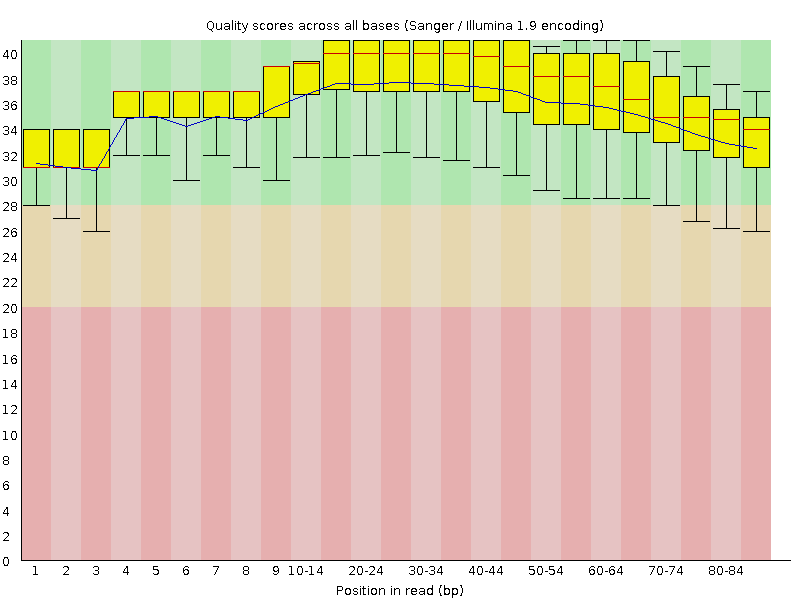
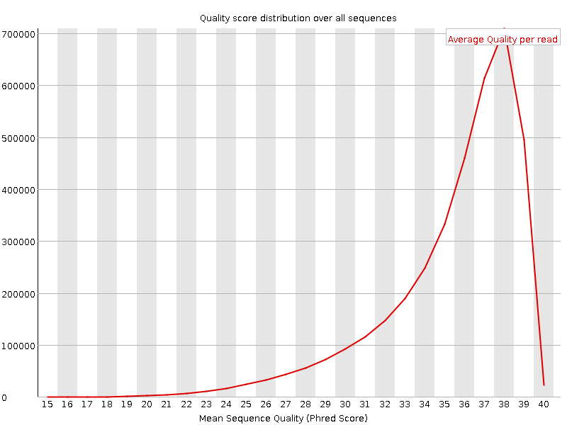
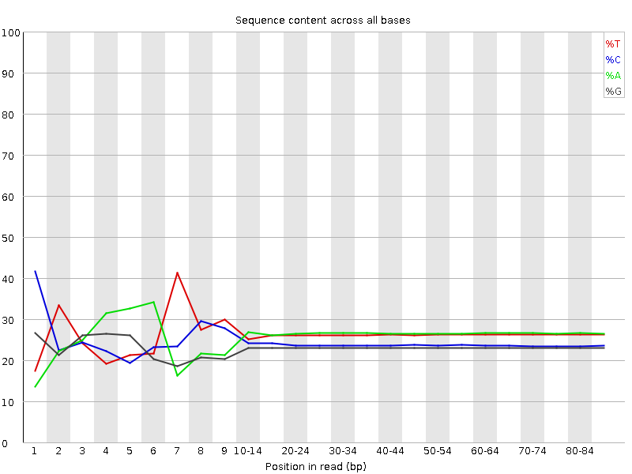
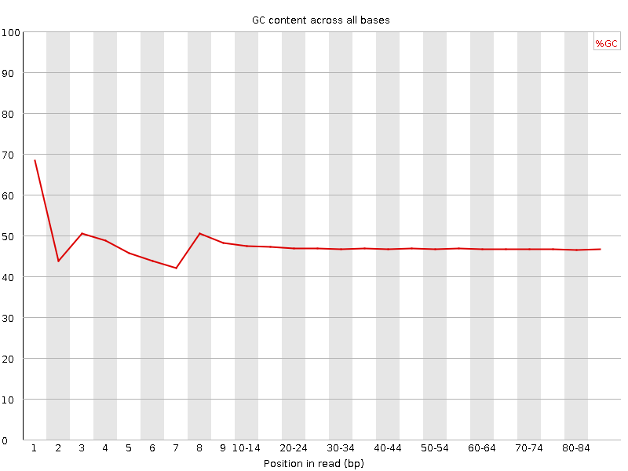
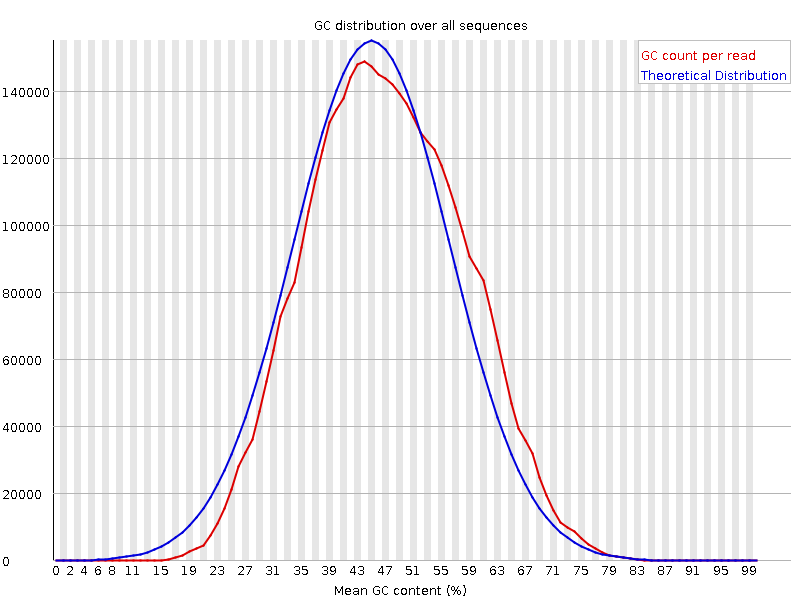
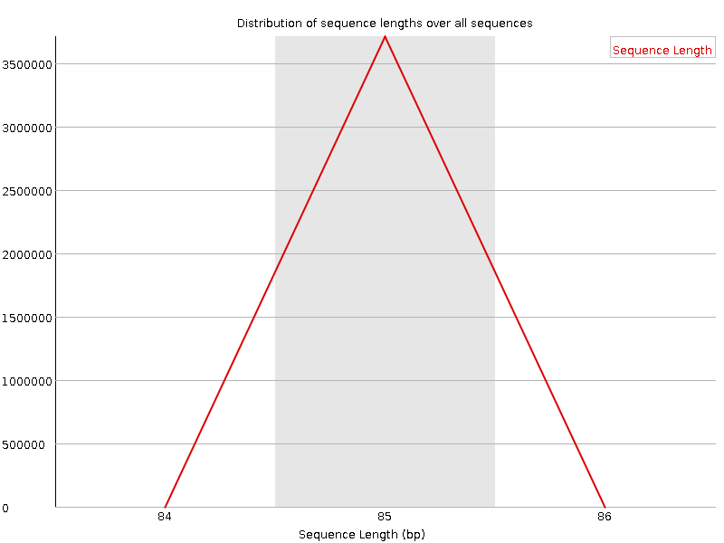
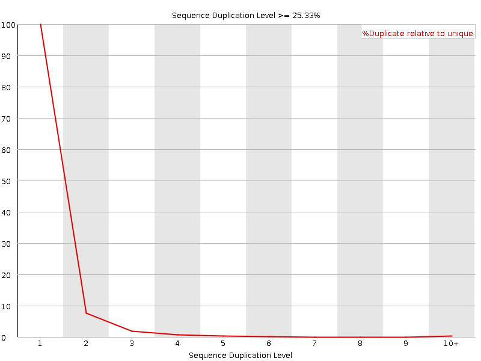
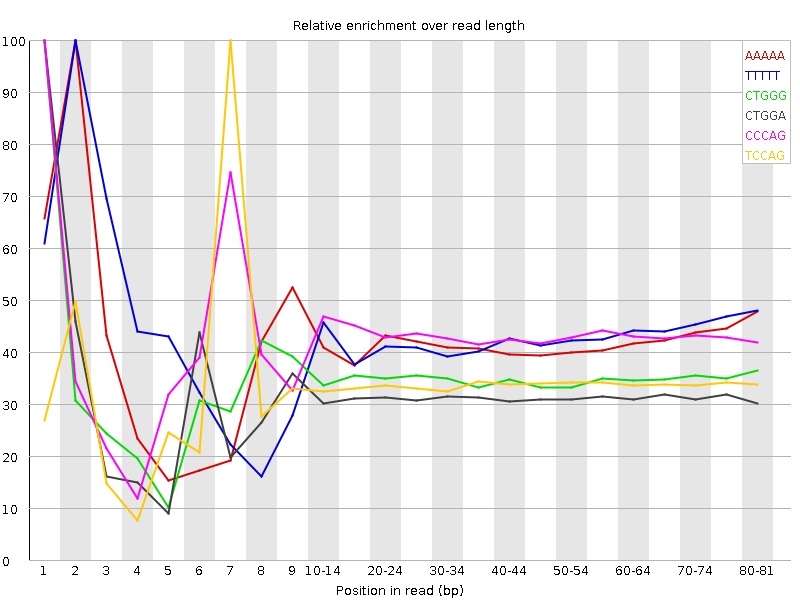

![[OK]](Icons/tick.png) Basic Statistics
Basic Statistics
| Measure | Value |
|---|---|
| Filename | c786-O.12_2.f.fastq |
| File type | Conventional base calls |
| Encoding | Sanger / Illumina 1.9 |
| Total Sequences | 3710163 |
| Filtered Sequences | 0 |
| Sequence length | 85 |
| %GC | 47 |
Per base sequence quality

Per sequence quality scores

![[FAIL]](Icons/error.png) Per base sequence content
Per base sequence content

Per base GC content

Per sequence GC content

Per base N content

Sequence Length Distribution

![[WARN]](Icons/warning.png) Sequence Duplication Levels
Sequence Duplication Levels

Overrepresented sequences
No overrepresented sequences
Kmer Content

| Sequence | Count | Obs/Exp Overall | Obs/Exp Max | Max Obs/Exp Position |
|---|---|---|---|---|
| AAAAA | 1047000 | 2.675363 | 6.427656 | 2 |
| TTTTT | 941115 | 2.4859939 | 5.7663517 | 2 |
| CTGGG | 547760 | 2.320384 | 6.648081 | 1 |
| CTGGA | 598210 | 2.2155683 | 7.0124235 | 1 |
| CCCAG | 566865 | 2.2088122 | 5.097259 | 1 |
| TCCAG | 598545 | 2.1331687 | 6.320601 | 7 |
| CTCCA | 583685 | 2.0017226 | 5.6321115 | 6 |
| CTGGC | 473630 | 1.9306595 | 5.0303006 | 1 |
| CAGAA | 598060 | 1.9237733 | 5.040375 | 1 |
| AAAAT | 733770 | 1.8874708 | 5.1828475 | 3 |
| CTTTG | 510790 | 1.676117 | 5.07137 | 1 |
| CTTGG | 434830 | 1.621195 | 5.1641264 | 1 |
| ATCCA | 391100 | 1.2186475 | 5.165199 | 6 |